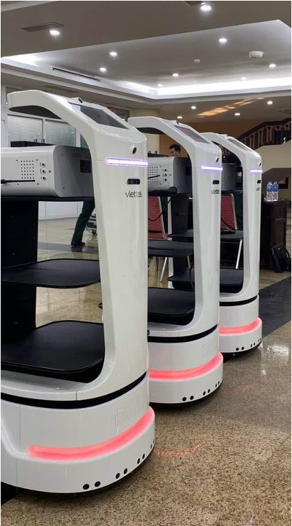
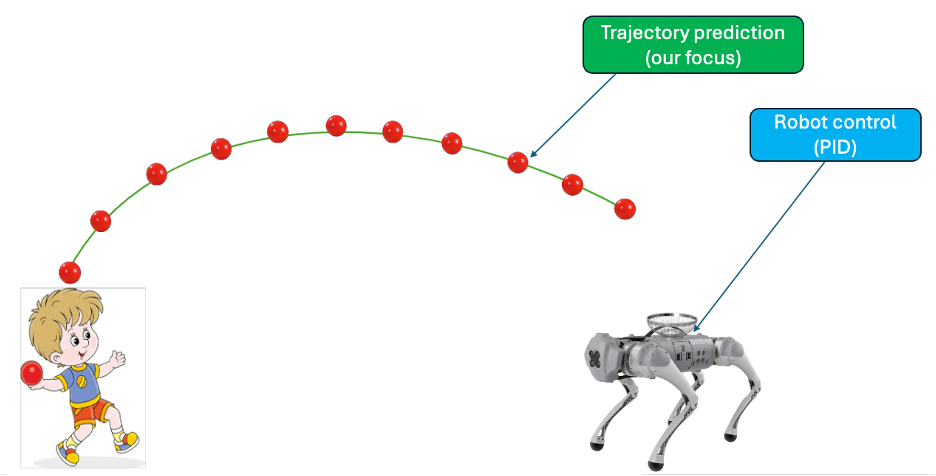

1. VOR Project (Delivery Mobile Robot) – Viettel Robotics (Sep 2021 ~ Sep 2023)

Role: Robotics software engineer
Tasks and responsibilities:
- Tested, integrated SLAM, localization, motion planning algorithms in simulation and deployed on real robots
- Evaluated hardware devices: sensors, embedded computers
- Safety program development:
- Multiple safety layers around robot to limit its movement speed.
- Ensure the safety of both humans and robot during operation.
- Based on RGB-D cameras, 2D LiDAR, and ultrasonic sensors (C++).
Robot can avoid close, unseen obstacles very smoothly (link)
- Motion planning algorithm development:
- Based on MPC
- Running on a GPU (C++, CUDA)
- Control frequency: 30 Hz
- Max robot speed: 1.2 m/s
- Idea:
- Sample multiple actions in action space
- Select the best action sequence based on:
- Speed, moving time
- Distance to obstacles, goal
2. Robot Catching Project – Robot Learning Lab – NAIST (Sep 2023 ~ Sep 2025)
Roles:
- Master’s student
- KMMF Parasonic Scholar
Project description:
- Quadruped robot designed to capture flying objects, focus on future trajectory prediction model
- Future trajectory prediction model:
- Predict future trajectory of objects -> predict future impact point
- Based on LSTM
- Dataset: Collected trajectory data of 20 objects, with varying shapes, each influenced by distinct aerodynamic forces
- Repo: rocat_dataset (will be public after paper publication)
- Improvement: Our model improved the accuracy by more than 40% compared to the baseline method.
- Experiments:

Gazebo simulation
Real robot experiment - More videos: link
3. Legged robot control – TOW Research Team (Mar 2023 ~ Present)
- Sensor fusion based on Kalman Filter, Extended Kalman Filter and Unscented Kalman Filter
- Legged robot control based on learning method (Reinforcement learning and VLA):
- Currently in survey phase
Contact
- Email: Huy.nguyenngoc2137@gmail.com
- Phone: +81 7085552137
- LinkedIn: Profile
- GitHub: Ngochuy2137